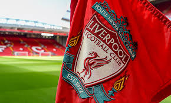

Dylan Lam
About Me
Soccer
 Soccer has always been the thing in my life that I have always looked forward to. Whenever I’m having a rough day, soccer seems to be the thing that makes me forget every bad thing that happened. Yes it can be tiring; however, putting all this effort into the sport feels even better when it succeeds. If I don’t exceed, I know that I’ve done something wrong, which allows me to improve myself to make sure it doesn’t happen again. My team is a great team, as they are not just good on the field but also good off the field, keeping morale high. Overall, everything about my soccer career just makes me a better person overall, as it keeps me in shape, puts me with good people, and I can do what I actually enjoy.
Soccer has always been the thing in my life that I have always looked forward to. Whenever I’m having a rough day, soccer seems to be the thing that makes me forget every bad thing that happened. Yes it can be tiring; however, putting all this effort into the sport feels even better when it succeeds. If I don’t exceed, I know that I’ve done something wrong, which allows me to improve myself to make sure it doesn’t happen again. My team is a great team, as they are not just good on the field but also good off the field, keeping morale high. Overall, everything about my soccer career just makes me a better person overall, as it keeps me in shape, puts me with good people, and I can do what I actually enjoy.
Liverpool
 When I first started actually enjoying soccer (maybe around 8 years old) and getting into a team, I had to choose a team to support. Although there were many teams to choose from, I chose a team that supposedly came out from nowhere to become a team competing for the top; that team was Liverpool FC. After their brilliant display in the 17/18 season, becoming runners up in the world’s most prestigious club competition, they would go on to be one of the dominant forces in the world for 7 consecutive years until now. They have won numerous awards, developed some of the greatest players, and always have had one of the best fanbases in the world. Previously, they were a team with a lot of energy; managed by Jurgen Klopp, his management of the club, described himself to be “heavy-metal football,” consisted of high pressing and constant running throughout the match. However, a new brand of soccer came along when Klopp left, bringing some more control into the game.
School
 I feel like my school, Canyon Crest Academy has been a roller coaster for me, and I am sure that many other people can feel the same way. Sometimes, you feel so smart after taking a test that everyone didn’t do well on, but other times it's the other way around. This junior year, for me at least, has not been an exception, as in almost all my classes I was struggling at one point. Nevertheless, instead of simply complaining about the difficulty of my classes or its teachers, I always told myself that it is not their fault the class is hard, but the class is supposed to be hard in itself (especially the AP classes). Junior year is often regarded as the hardest year of high school, and I should be able to adapt to these challenges because realistically college will become even harder. It also is thrilling, as I am used to my classes being relatively easy, but the difficulty of the classes has forced me to be attentive in class and actually learn the material, which also sparks some curiosity in me.
I feel like my school, Canyon Crest Academy has been a roller coaster for me, and I am sure that many other people can feel the same way. Sometimes, you feel so smart after taking a test that everyone didn’t do well on, but other times it's the other way around. This junior year, for me at least, has not been an exception, as in almost all my classes I was struggling at one point. Nevertheless, instead of simply complaining about the difficulty of my classes or its teachers, I always told myself that it is not their fault the class is hard, but the class is supposed to be hard in itself (especially the AP classes). Junior year is often regarded as the hardest year of high school, and I should be able to adapt to these challenges because realistically college will become even harder. It also is thrilling, as I am used to my classes being relatively easy, but the difficulty of the classes has forced me to be attentive in class and actually learn the material, which also sparks some curiosity in me.